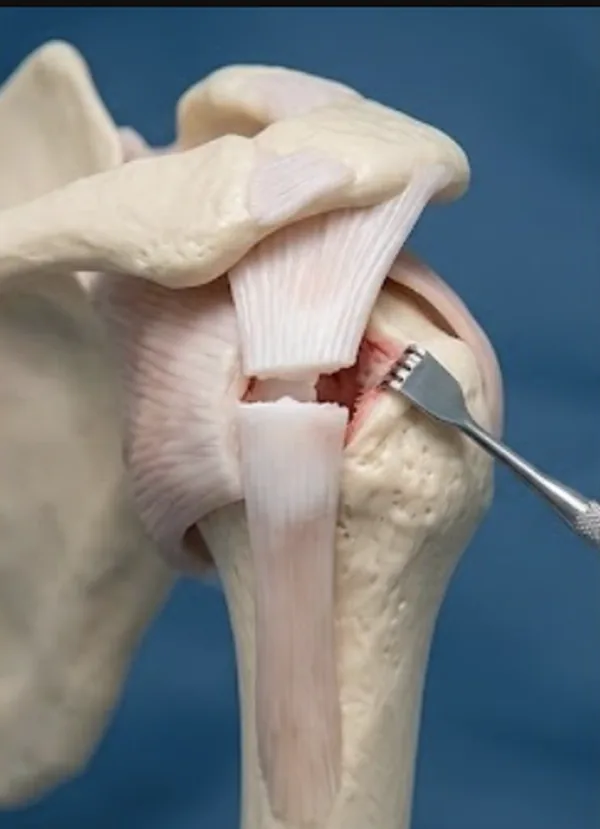

Η ρήξη τένοντα μπορεί να είναι μερική ή πλήρης και προκαλείται από απότομη υπερφόρτιση, τραυματισμό, αθλητική δραστηριότητα ή εκφυλιστική φθορά. Συμπτώματα είναι ο έντονος πόνος, η αδυναμία κίνησης, το πρήξιμο και η απώλεια λειτουργίας.
Η διάγνωση βασίζεται στην κλινική εξέταση και επιβεβαιώνεται με υπέρηχο ή μαγνητική τομογραφία. Η θεραπεία μπορεί να είναι συντηρητική με ακινητοποίηση και φυσικοθεραπεία ή χειρουργική με συρραφή του τένοντα.
Τι περιλαμβάνει
- Ρήξεις τενόντων άνω και κάτω άκρου
- Υπέρηχος ή MRI όπου χρειάζεται
- Συντηρητική αποκατάσταση
- Χειρουργική συρραφή τένοντα
- Μετεγχειρητικό πρόγραμμα επανένταξης
Συχνές ερωτήσεις
Πώς καταλαβαίνω αν κόπηκε τένοντας;
Η πλήρης ρήξη συχνά συνοδεύεται από ξαφνικό πόνο, απώλεια δύναμης ή αδυναμία συγκεκριμένης κίνησης.
Όλες οι ρήξεις χρειάζονται συρραφή;
Όχι. Η θεραπεία εξαρτάται από τον τένοντα, το ποσοστό ρήξης, τη λειτουργική απαίτηση και τον χρόνο από τον τραυματισμό.
Πόσο σημαντική είναι η φυσικοθεραπεία;
Είναι κρίσιμη για ασφαλή επαναφορά της δύναμης και του εύρους κίνησης, είτε μετά από χειρουργείο είτε σε συντηρητική αγωγή.